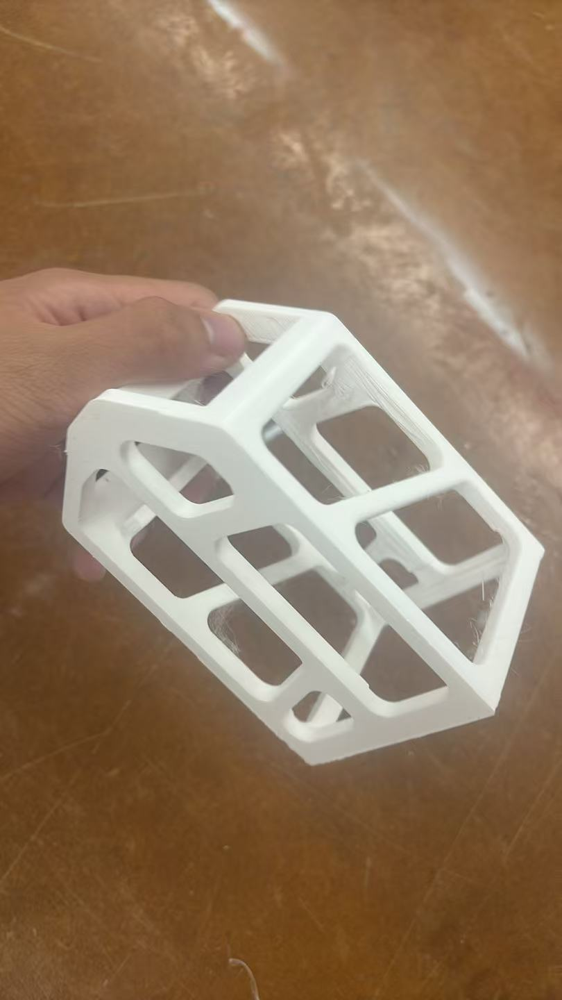

Weekly Lab Notes & Work
MVP: Minimum Viable Product Design
Input device: FSR pressure sensor
Output device: Stepper motor
Function logic: When the detected pressure value is low, the stepper motor rotates a larger angle to lock the spoon and prevent it from falling off; higher pressure corresponds to smaller rotation travel.
Demo video link: Bilibili Demo Video
3D Render of Hand Assembly

This image shows the final 3D schematic of the mechanism placed inside the hand assembly.
3D Printed MVP Physical Model

This photo displays the fully 3D printed MVP prototype based on the above CAD design.
Initial Arduino Source Code
#includeconst int FSR_PIN = A1; const int stepPin = D7; const int dirPin = D8; AccelStepper stepper(1, stepPin, dirPin); const int GRIP_MIN = 500; const int GRIP_MAX = 3500; const int STEP_TWO_CIRCLE = 400; const int STEP_MIN = 50; unsigned long timeMark = 0; const unsigned long READ_INTERVAL = 4000; int stage = 0; void setup() { pinMode(FSR_PIN, INPUT); stepper.setMaxSpeed(1200.0); stepper.setAcceleration(300.0); stepper.setCurrentPosition(0); } void loop() { stepper.run(); switch (stage) { case 0: if (millis() - timeMark >= READ_INTERVAL) { timeMark = millis(); int fsrRaw = analogRead(FSR_PIN); int fsrSafe = constrain(fsrRaw, GRIP_MIN, GRIP_MAX); long targetPos = map(fsrSafe, GRIP_MIN, GRIP_MAX, STEP_TWO_CIRCLE, STEP_MIN); stepper.moveTo(targetPos); stage = 1; } break; case 1: if (stepper.distanceToGo() == 0 && millis() - timeMark >= 2000) { timeMark = millis(); stepper.moveTo(0); stage = 2; } break; case 2: if (stepper.distanceToGo() == 0 && millis() - timeMark >= 2000) { timeMark = millis(); stage = 0; } break; } }
Revision & Updated Firmware
I changed my design approach later. The initial timer‑based mapping code above was discarded. I added a BNO055 IMU sensor to measure real‑time rotational tilt angle of the mechanism. The system now performs dynamic angle compensation: when FSR pressure is detected, it captures the initial IMU angle as zero reference, and the stepper motor continuously counter‑rotates to offset mechanical tilt. Below is the final working code:
#include#include #include #include #include #include // ===================================================== // XIAO ESP32C3 引脚 // ===================================================== #define I2C_SDA D4 #define I2C_SCL D5 const int FSR_PIN = A1; const int STEP_PIN = D7; const int DIR_PIN = D8; // DRIVER模式：STEP、DIR AccelStepper stepper( AccelStepper::DRIVER, STEP_PIN, DIR_PIN ); // ===================================================== // BNO055 // ===================================================== Adafruit_BNO055 bno = Adafruit_BNO055(55, 0x28, &Wire); // ===================================================== // FSR拟合参数 // // weight = 0.1424 × raw - 177.3 // ===================================================== const float FSR_K = 0.1424f; const float FSR_B = -177.3f; // 拟合重量大于0时启动 // 静止时误触发可以改为2.0或5.0 const float PRESSURE_THRESHOLD_GRAMS = 0.0f; // ===================================================== // 17HS19-2004S1参数 // ===================================================== // 你已经实测：200个脉冲正好一圈 const float FULL_STEPS_PER_REVOLUTION = 200.0f; // 当前驱动器是全步 const float MICROSTEPS = 1.0f; // 电机与平台直接1:1连接 const float GEAR_RATIO = 1.0f; const float STEPS_PER_DEGREE = FULL_STEPS_PER_REVOLUTION * MICROSTEPS * GEAR_RATIO / 360.0f; // 当前结果： // 200 / 360 ≈ 0.5556步/度 // ===================================================== // 电机运动参数 // ===================================================== const float MAX_SPEED = 350.0f; const float ACCELERATION = 250.0f; // -1表示电机反方向补偿 // 方向不对就改成+1 const float MOTOR_DIRECTION = -1.0f; // 角度死区 const float ANGLE_DEADZONE = 0.4f; // 上电位置正负90°软件限位 const float MAX_MOTOR_ANGLE = 90.0f; const long MAX_MOTOR_STEPS = lroundf( MAX_MOTOR_ANGLE * STEPS_PER_DEGREE ); // ===================================================== // 实时控制周期 // ===================================================== // 20ms = 50Hz // 稳定后可以试10ms = 100Hz const unsigned long CONTROL_INTERVAL_MS = 20UL; // 串口不要每20ms打印，避免拖慢程序 const unsigned long PRINT_INTERVAL_MS = 100UL; unsigned long lastControlTime = 0; unsigned long lastPrintTime = 0; // ===================================================== // 滤波 // ===================================================== // 越大反应越快，但噪声越明显 // 越小越平滑，但延迟更大 const float FILTER_ALPHA = 0.35f; // ===================================================== // 控制状态 // ===================================================== bool controlActive = false; // FSR按下时记录的IMU零点 float imuZeroAngle = 0.0f; // 滤波后的当前角度 float filteredAngle = 0.0f; // FSR按下时的电机位置 long motorSessionOrigin = 0; // 最近一次数据，仅供串口显示 float latestAlpha = 0.0f; float latestRelativeAngle = 0.0f; float latestWeight = 0.0f; long latestTargetSteps = 0; // ===================================================== // 角度标准化到-180～+180 // ===================================================== float wrapTo180(float angle) { while (angle > 180.0f) { angle -= 360.0f; } while (angle < -180.0f) { angle += 360.0f; } return angle; } // ===================================================== // 读取FSR拟合重量 // ===================================================== float readFSRWeight(int &rawValue) { rawValue = analogRead(FSR_PIN); float weight = FSR_K * rawValue + FSR_B; if (weight < 0.0f) { weight = 0.0f; } return weight; } // ===================================================== // 通过四元数计算绕X轴Roll // ===================================================== float readRawRollX() { imu::Quaternion q = bno.getQuat(); double w = q.w(); double x = q.x(); double y = q.y(); double z = q.z(); double numerator = 2.0 * (w * x + y * z); double denominator = 1.0 - 2.0 * (x * x + y * y); double rollRadians = atan2(numerator, denominator); float rollDegrees = rollRadians * 180.0f / PI; return wrapTo180(rollDegrees); } // ===================================================== // 按照你的α规则表示方向 // // +70°：alpha = 70° // -70°：alpha = 110° // // 所以： // alpha 70° 对应正方向70° // alpha 110° 对应反方向70° // ===================================================== float readSignedXAngle(float &alphaOut) { float signedAngle = readRawRollX(); /* 你的系统将有方向角限制为： -90°到+90° */ signedAngle = constrain( signedAngle, -90.0f, 90.0f ); if (signedAngle >= 0.0f) { alphaOut = signedAngle; } else { alphaOut = 180.0f + signedAngle; } return signedAngle; } // ===================================================== // 启动时读取几次作为稳定零点 // 这里只在FSR刚按下时运行一次 // ===================================================== float readInitialZeroAngle() { const int SAMPLE_COUNT = 5; float total = 0.0f; for (int i = 0; i < SAMPLE_COUNT; i++) { float alpha; total += readSignedXAngle(alpha); delay(4); } return total / SAMPLE_COUNT; } // ===================================================== // 电机目标位置限位 // ===================================================== long limitMotorTarget(long target) { if (target > MAX_MOTOR_STEPS) { return MAX_MOTOR_STEPS; } if (target < -MAX_MOTOR_STEPS) { return -MAX_MOTOR_STEPS; } return target; } // ===================================================== // setup // ===================================================== void setup() { Serial.begin(115200); delay(1000); pinMode(FSR_PIN, INPUT); // IMU Wire.begin(I2C_SDA, I2C_SCL); // 保持100kHz，优先保证BNO055通信稳定 Wire.setClock(100000); // 电机 stepper.setMaxSpeed(MAX_SPEED); stepper.setAcceleration(ACCELERATION); stepper.setCurrentPosition(0); // BNO055 if (!bno.begin()) { Serial.println("ERROR: BNO055 not detected."); Serial.println("Check:"); Serial.println("VIN -> 3V3"); Serial.println("GND -> GND"); Serial.println("SDA -> D4"); Serial.println("SCL -> D5"); while (true) { delay(1000); } } delay(1000); bno.setExtCrystalUse(true); Serial.println(); Serial.println("BNO055 detected."); Serial.println("Realtime control rate: 50 Hz."); Serial.println("Waiting for FSR pressure..."); Serial.print("Steps per degree = "); Serial.println(STEPS_PER_DEGREE, 6); Serial.print("Motor software limit = +/-"); Serial.print(MAX_MOTOR_STEPS); Serial.println(" steps"); } // ===================================================== // loop // ===================================================== void loop() { /* 无论IMU是否正在读取， 都要尽可能频繁地调用run()。 */ stepper.run(); // ----------------------------- // 读取FSR // ----------------------------- int fsrRaw = 0; latestWeight = readFSRWeight(fsrRaw); bool pressureActive = latestWeight > PRESSURE_THRESHOLD_GRAMS; // =================================================== // FSR松开 // =================================================== if (!pressureActive) { if (controlActive) { controlActive = false; // 按加速度停止 stepper.stop(); Serial.println(); Serial.println("FSR released."); Serial.println("Realtime compensation stopped."); } return; } // =================================================== // FSR刚按下 // 当前IMU位置定义为0° // =================================================== if (!controlActive) { controlActive = true; imuZeroAngle = readInitialZeroAngle(); filteredAngle = imuZeroAngle; motorSessionOrigin = stepper.currentPosition(); latestRelativeAngle = 0.0f; lastControlTime = millis(); lastPrintTime = millis(); Serial.println(); Serial.println("FSR pressed."); Serial.print("IMU absolute zero = "); Serial.print(imuZeroAngle, 2); Serial.println(" deg"); Serial.println( "Current IMU position is defined as 0 deg." ); return; } // =================================================== // 每20ms更新一次IMU与电机目标 // =================================================== unsigned long now = millis(); if ( now - lastControlTime >= CONTROL_INTERVAL_MS ) { lastControlTime = now; float currentAlpha = 0.0f; float measuredAngle = readSignedXAngle(currentAlpha); /* 一阶低通滤波。 使用角度差进行滤波， 可以避免角度边界跳变。 */ float filterDifference = wrapTo180( measuredAngle - filteredAngle ); filteredAngle = wrapTo180( filteredAngle + FILTER_ALPHA * filterDifference ); // 相对于FSR按下时零点的角度 float relativeAngle = wrapTo180( filteredAngle - imuZeroAngle ); latestAlpha = currentAlpha; latestRelativeAngle = relativeAngle; // --------------------------- // 死区 // --------------------------- if ( fabsf(relativeAngle) <= ANGLE_DEADZONE ) { relativeAngle = 0.0f; } // --------------------------- // IMU角度对应电机目标角度 // --------------------------- float motorTargetAngle = MOTOR_DIRECTION * relativeAngle; /* 注意这里先使用float计算完整目标， 最后才取整。 这样即使每20ms只变化0.2°， 小角度也会累积，直到足够走一个整步。 */ float targetStepsFloat = motorSessionOrigin + motorTargetAngle * STEPS_PER_DEGREE; long targetSteps = lroundf(targetStepsFloat); targetSteps = limitMotorTarget(targetSteps); latestTargetSteps = targetSteps; /* 不等待电机完成。 新的IMU数据到来后， 可以随时更新电机目标。 */ stepper.moveTo(targetSteps); } // =================================================== // 每100ms打印一次，避免串口拖慢控制 // =================================================== if ( now - lastPrintTime >= PRINT_INTERVAL_MS ) { lastPrintTime = now; Serial.print("Weight = "); Serial.print(latestWeight, 1); Serial.print(" g"); Serial.print(" | Alpha = "); Serial.print(latestAlpha, 2); Serial.print(" deg"); Serial.print(" | Relative X = "); Serial.print(latestRelativeAngle, 2); Serial.print(" deg"); Serial.print(" | Motor target = "); Serial.print(latestTargetSteps); Serial.print(" steps"); Serial.print(" | Motor current = "); Serial.println( stepper.currentPosition() ); } }